Animaze Desktop: What are other ways I can make my background transparent?
First of all, you can download the transparent background available HERE
After you do that, open Animaze and import the image as a background pressing the PLUS sign in the backgrounds
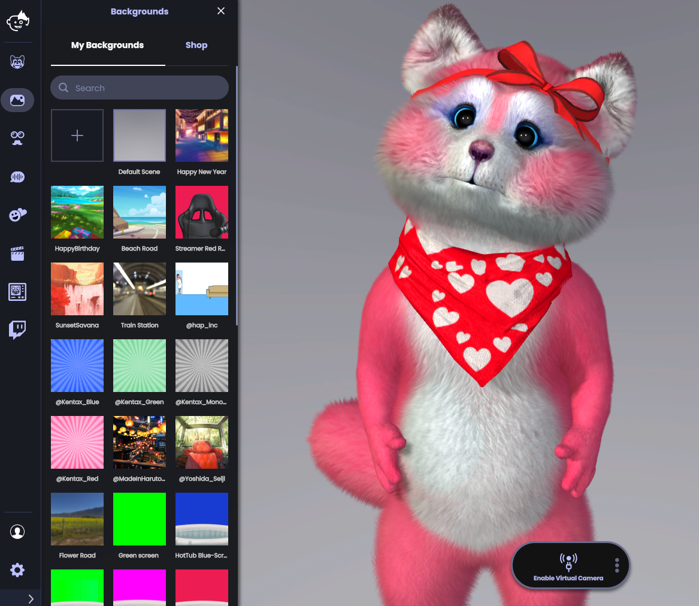
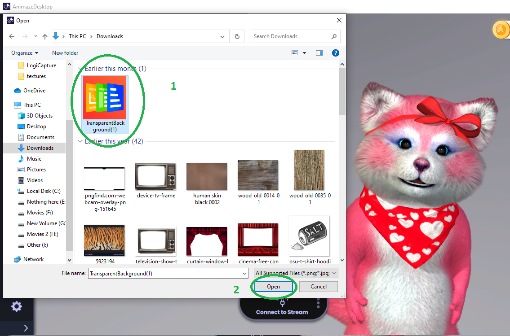
Once this is done, you can go ahead and start OBS
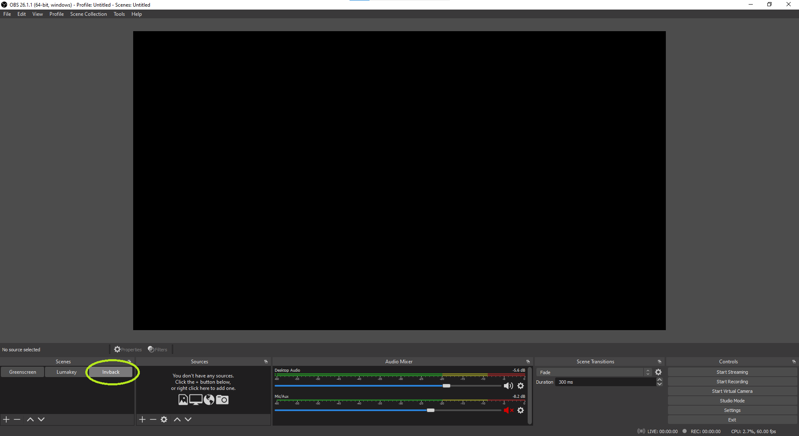
Create a Window Capture Device / Video Capture Device scene in OBS
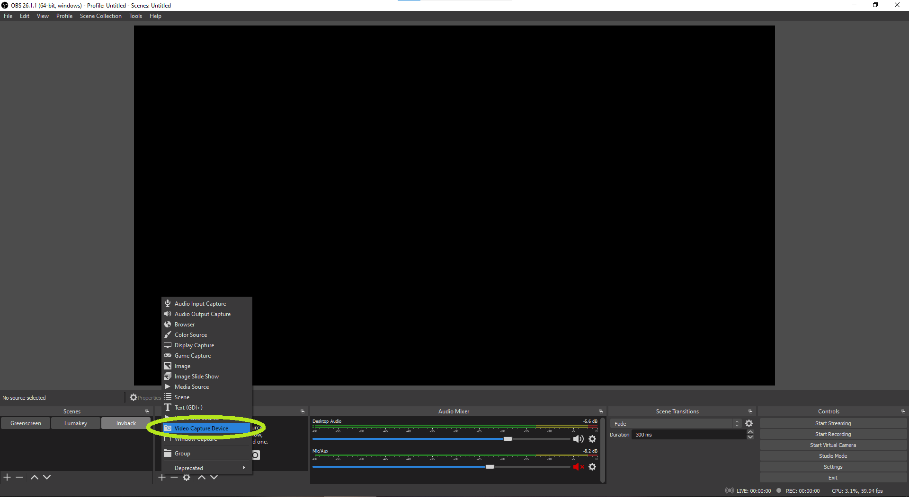
Select the Animaze Virtual Camera as the input device
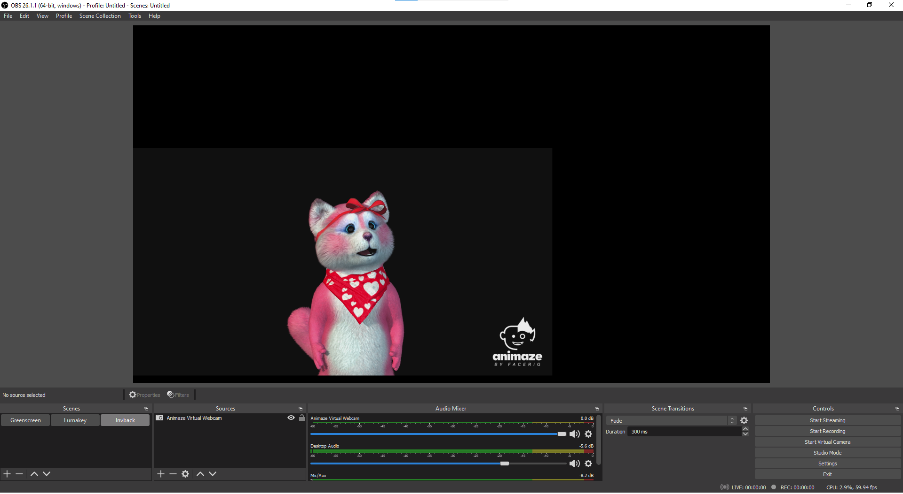
6. Press “Connect to Stream” in Animaze to start streaming to OBS
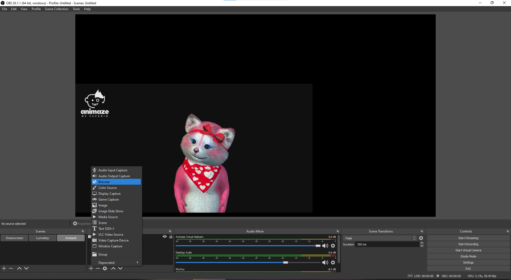
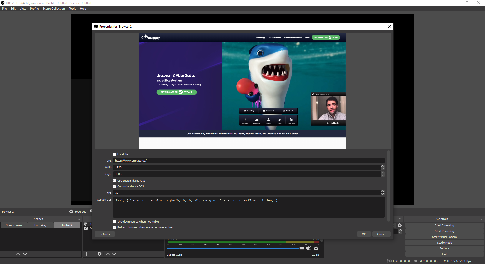
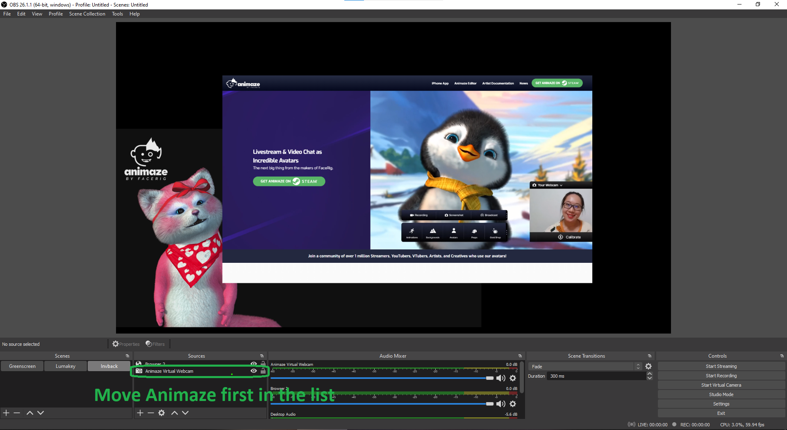
Go back to OBS and right-click on the scene > Filters > Add Effect Filter > Add Luma Key filter > OK to save
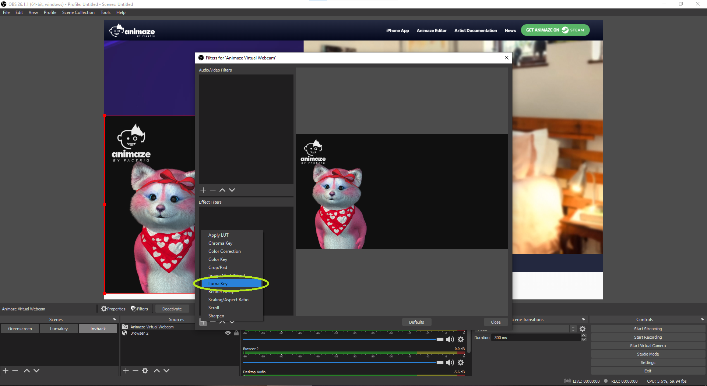
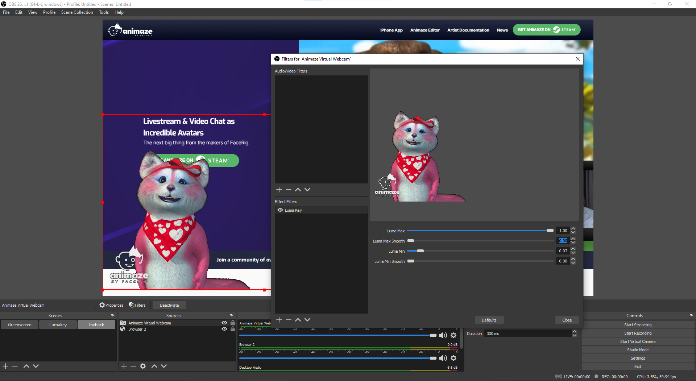
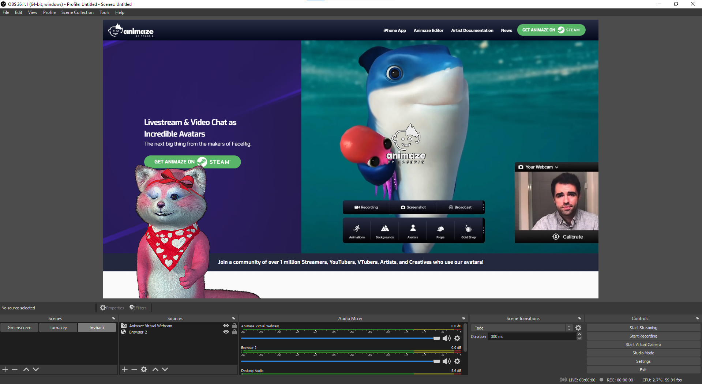
Still in OBS, create a new scene with image / game capture / display capture etc. as a source
After you save the new scene, make sure that the Video Capture Device scene is placed above the second scene that was created.